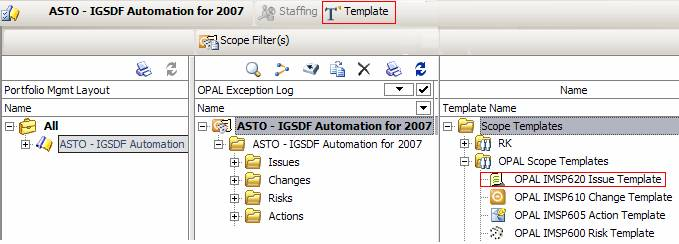

| Tool Mentor: Issue Management Using Rational Portfolio Manager (Overview) |
 |
|
| 1. Purpose
This document provides guidance how Rational PM is used to support Issue Management in accordance with the OnDemand
Process Asset Library (OPAL). This document may serve as a template for creating a tailored procedure or
guideline.
The intent of this guidance is to provide sufficient direction on how Rational PM is used on a project to support Issue Management, so that there are no ambiguities about the process and the team training can be concise. The guidance assumes a basic understanding of how to use Rational PM and is not intended to be training material. Detailed training on the use of Rational PM can be found by selecting Education and Training from the GBS Rational Portfolio Management Enablement page. 2. OPAL RPM Procedure - Tool Implementation of the OPAL Procedure
The following process steps are taken from the IMSP620 Issue Management Procedure. State refers to the State field in the Identification Portlet
of the Issue in Rational PM. Each procedure step and associated OPAL data to be captured and updated are detailed
below.
Step 1 - Perform initial analysis, accept or escalate - performed by Project ManagerPlease note that Rational PM elements in BOLD text and highlights are considered required. Other fields and portlets are recommended for completeness. Refer to the table in section 3 for a complete description of all fields, standards and practices.

Step 2 - Determine resolution actions - performed by Project Manager or designated Issue Owner
|
||||||||||||||||||||||||||||||||||||||||||||||||||||||||||||||||||||||||||||||||||||||||||||||||||||||||||||||||||||||||||||||||||||

|
Portlet/Field |
Description |
Standards and Practices |
|
Identification Portlet |
||
|
Rank |
Rank defines the level of Severity of the Issue This field is critical to the Business Management Review (BMR) Investment Map and should be set for each Issue |
Select one of the following values: 900: Critical 700: High 500: Medium 300: Low |
|
Reference Number |
Repository unique identifier for Issue |
Rational PM assigns reference Number automatically |
|
External Reference Number |
The project may have its own numbering system. This field can be used for tracking that number |
External Reference Number is the manual text assigned by the PM |
|
Occurred Date/Time |
Date / time that the Issue was raised |
Enter the Date/Time of the event that caused this Issue to be raised |
|
Element security |
Security control - project level or by invitation. Project Level is the default |
For confidential and commercially sensitive information, use 'by invitation' |
|
Target Date |
Target date for closing Issue |
Enter the target date that is expected for closure of the Issue |
|
EST/Start |
Estimated start date |
Enter the date that activity is expected to start on the Issue |
|
EST/Finish |
Estimated finish date |
Enter the date that activity is expected to finish on the Issue |
|
State |
The state is related to the step in workflow |
Use the following basic state values to identify the state of the Issue during the lifecycle Basic states Open: Initial state Rejected: Not accepted as Issue Accepted: Accepted for analysis and resolution determination In Progress: Issue is being resolved with approved plan Closed. Issue has been resolved, validated, and accepted by the Issue Owner Non OPAL States: These state values are available in RPM but are not used in the OPAL procedure Technical Review Financial Review General Review Approved Assigned Resolved To Be Validated |
|
Free Text Portlets |
||
|
Description |
Issue description, in sufficient detail to be understood by others on the team |
Enter a complete and detailed description of the Issue. Symptoms and facts that are causing concern |
|
Status |
Log of assessment of Issue status |
Enter additional comments as needed to trace the progress and resolution of the Issue. For example, record the history of an Issue transfer, including the justification for the transfer and the person to whom it was transferred. Status should be updated on a regular basis. The date / time stamp function should be used to identify multiple entries |
|
Root Cause |
List root cause or causal factors |
Enter the primary cause of the Issue. Identifying the cause is required for defining the resolution |
|
Consequences |
Describe the consequences to the project if Issue is not resolved |
Enter description of the impact the Issue is having or is likely to have on the project and the optimal time frame for resolution |
|
Closure criteria |
Criteria to be met to satisfy closure of the Issue |
Enter the information necessary to satisfy Issue Owner that Issue has been satisfactorily resolved |
|
Resolution |
Activity(s) done to resolve the Issue |
Enter a description of the activities needed or that have been performed to resolve the Issue |
|
Quantification / Impact portlet |
||
|
Schedule Impact in days |
Impact in days the element may have on the schedule |
Enter value in days |
|
Order of Magnitude Work in hours(s) |
The best estimate of the amount of work required to respond to this element |
Enter value in hours |
|
Order of Magnitude Work Low in hour(s) |
An estimate of the minimum amount of work required to respond to this element |
Enter value in hours |
|
Order of Magnitude Work High in hour(s) |
An estimate of the maximum amount of work required to respond to this element |
Enter value in hours |
|
Order of Magnitude Cost / Benefit portlet |
||
|
Order of Magnitude Cost |
Ballpark estimate for the cost of the element |
Enter value in selected currency |
|
Order of Magnitude Cost Low |
Ballpark estimate for the lowest possible cost of the element |
Enter value in selected currency |
|
Order of Magnitude Cost High |
Ballpark estimate for the highest possible cost of the element |
Enter value in selected currency |
|
Order of Magnitude Billable Revenue |
Ballpark estimate for the amount of Billable Revenue impacted by the element |
Enter value in selected currency |
|
Order of Magnitude Non Billable Benefits |
Ballpark estimate for the amount of Non Billable Benefits impacted by the element |
Enter value in selected currency |
|
Other portlets |
||
|
Resources |
Resources that are assigned to the Issue |
Assign resources within this portlet (or Staffing View). If restricted access is needed use the 'By Invitation' option |
|
Attributes |
Select attributes. Can be used to identify subproject for Issue, or escalated Issue to program rollup |
Enter a specific value for the Issue Type attribute. Other attributes are dependent upon the owning organization |
|
Proposed by |
Resource proposing Issue |
Enter the name of the resource that has proposed the Issue. Selection can be made from RPM address book or directly entered for non RPM users. Default is resource entering record |
|
Approved by |
Resource approving the Issue as potentially impacting the project |
Enter the name of the resource that has approved the Issue. Selection can be made from RPM address book or directly entered for non RPM users |
|
Closed By |
Resource that closed the Issue |
Enter the name of the resource that has closed the Issue. Selection can be made from RPM address book or directly entered for non RPM users |
|
Status Update |
History (version) of updates made to the RPM Issue record |
System generated version control with ID, date, and time stamp of Issue record change |
| © Copyright IBM Corp. 1987, 2012 All Rights Reserved Property of IBM These materials are intended only for use as part of an IBM engagement |